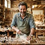
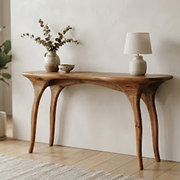
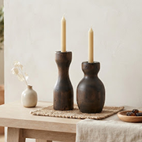

ÉBÉNISTE D'ART & UPCYCLING
Anime 2 ateliers / mois
Antoine Mercier
Lyon (69) • Atelier La Fuste
« Chaque poutre de déconstruction industrielle conserve la mémoire des siècles passés. Mon rôle n'est pas d'effacer les fentes et les nœuds, mais de les magnifier dans du mobilier architectural épuré. »
CRÉATIONS SIGNATURES RÉCENTES
 Banc Brut
Banc Brut

Console 1880
Duo Pyramide